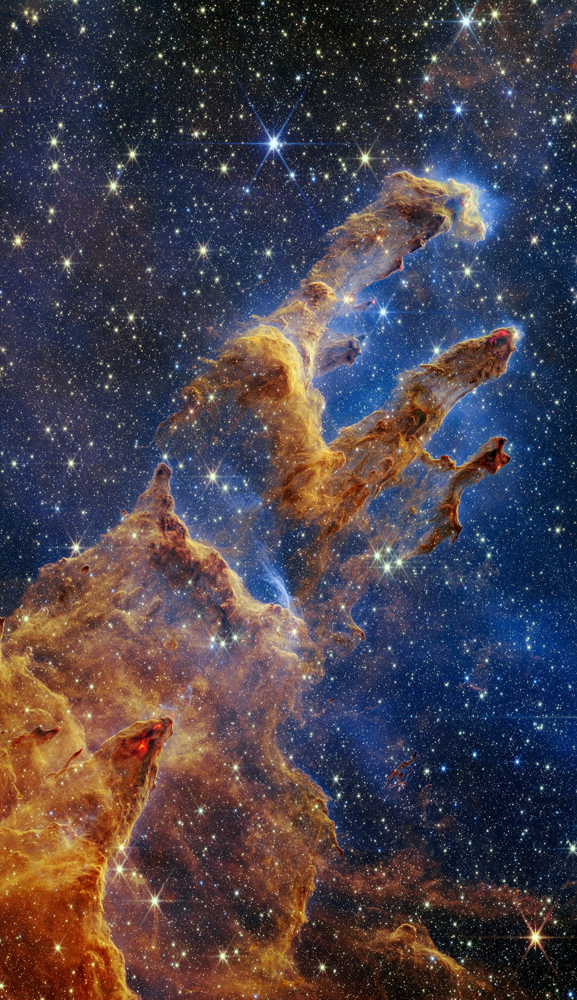

Personal Space Archive 001
ASTRA 観測と想像のあいだ
光が届くまでの時間を
わたしたちは宇宙と呼ぶ
Carina Nebula / NASA, ESA, CSA, STScI
Scroll to observe
Statement
2026.10 / Tokyo
遠い光は、
いまを問い直す。
宇宙を見ることは、過去を見ること。星から放たれた光が、何年、何千年、何百万年もの時間を越えて、いま私たちの目に届いています。
ASTRAは、NASAが捉えた光の記録を、静かに見つめるための個人アーカイブです。科学と想像の境界を歩きながら、まだ名前のない感覚を探します。
Selected Observations
光の標本

6,500 LY / SERPENSMoving Image
星雲を飛ぶ
平面の観測画像から、星々の距離データをもとに立体空間へ。7,500光年の彼方、カリーナ星雲への80秒の旅。
Flight to the Carina Nebula Complex — NASA’s Universe of Learning, 2025
About this archive
見ることから、
宇宙は始まる。
知らないものを、知らないまま見つめる。答えを急がず、その距離や時間ごと受け取る。ASTRAは、そんな観測のための小さな場所です。
- 01
- NASA / ESA / CSA imagery
- 02
- Deep space observations
- 03
- Curated in Tokyo